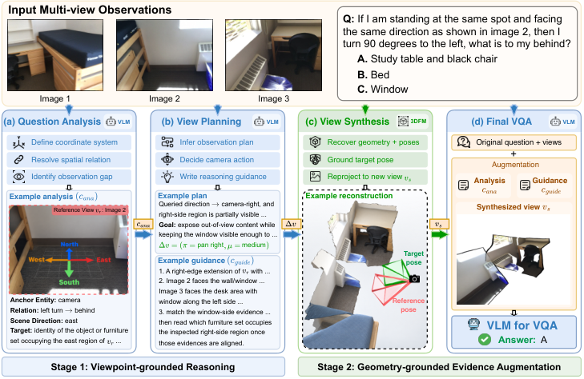

Paper Notes
Motivation and Inputs
固定视角让 VLM 依赖语言在不同图像之间对齐，容易遗漏真正有用的空间证据。Vantage 将推理拆成 seek-and-view：先判断需要看哪里，再回答问题。
输入是多视角图像和问题；中间输出 anchor、空间关系、相机动作和支持视图；最终输出空间回答。
Paper Notes
Two-Stage Pipeline

Qixiang Chen et al. · Original figure, unmodified · CC BY 4.0 · Paper & Caption ↗
图 2 的 Stage 1 由 VLM 做 viewpoint-grounded reasoning，识别目标关系并规划保持重力方向的相机动作。Stage 2 调用 3D foundation model 合成该视角，把新视图、原图、问题分析和 guidance 一起交给最终 VLM。
几何模型承担跨视角证据对齐，语言模型负责问题分解与最终解释。
Paper Notes
Experiments and Ablations
作者在五个多视角 benchmark 和六个 VLM 上评估，平均准确率提升 6.7%，无需微调。对 Qwen3-VL-4B，去掉 question analysis 后，MindCube-tiny 从 38.9 降到 30.0，MMSI-Bench 从 33.7 降到 26.8。
消融还显示合成视图、动作接口和最终上下文都影响结果；不同 3D foundation backends 与视场角也会改变收益。
Paper Notes
Failure Modes
错误包括问题分析、视角规划、视图合成和最终推理。模型能判断两个候选布局哪个正确，并不等于它能规划有效视角并生成正确的修正证据。
因此 6.7% 是下游空间问答收益，不是 3D 重建精度提升；论文没有把合成视图误差转化为深度或位姿指标。
Paper Notes
Transfer to LingBot-Map
LingBot-Map 通常没有主动相机控制，可以把 action planning 改成被动 evidence selection：根据当前 token 的不确定性选择历史帧或关键帧。
语义可负责指出“哪个区域与问题相关”，几何一致性负责判断“哪个观测可信”。这能直接形成 memory read 的可检验对照。
Discussion
Reading Questions
Does Vantage update persistent memory?
不直接。它临时生成问题相关视图，服务多视角 VQA。
What does its gain prove?
主动寻找证据能改善下游回答，但不证明重建几何被改善。
What can we borrow?
把 memory read 建模为证据需求，并用不确定性选择历史观测。
References
First submitted 2026-10-08. Read 2610.11810v1 on 17 November 2026. One original figure is reproduced under CC BY 4.0. Experimental results are reported by the authors and have not been independently reproduced.
Verified on 2026-11-17. Paper results refer to the linked versions. Repository references were checked on this date.